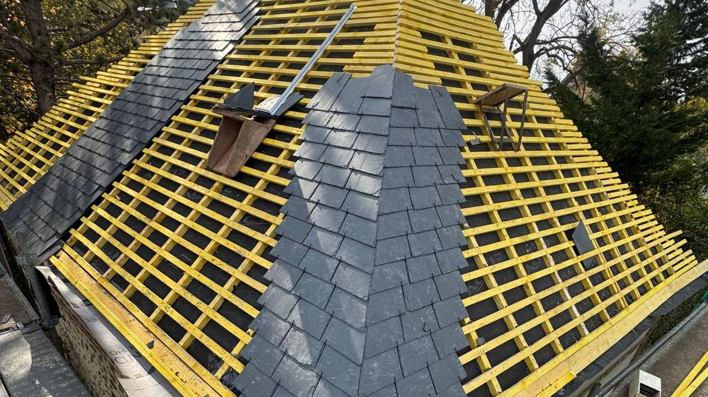
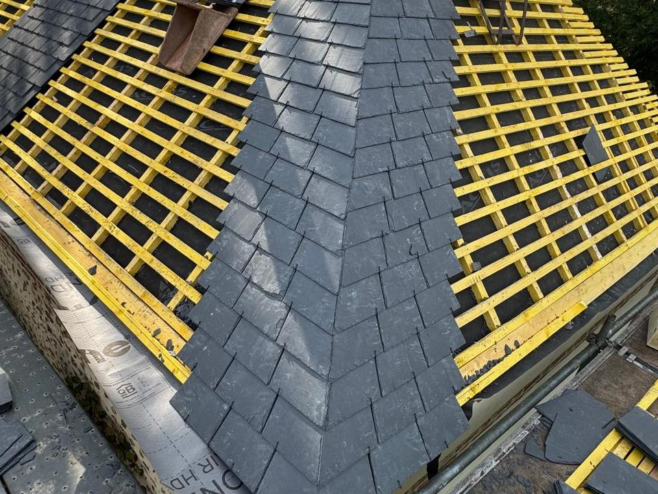
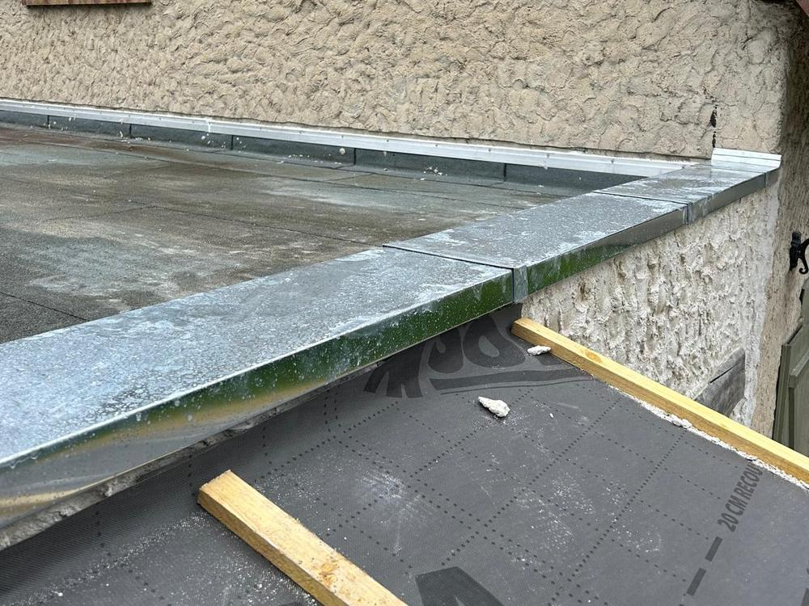
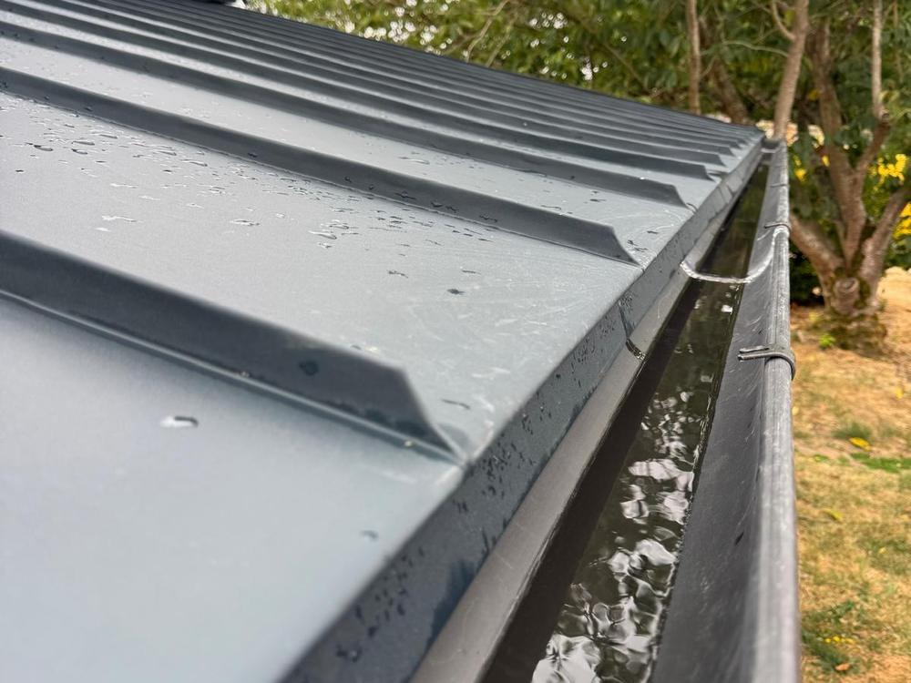
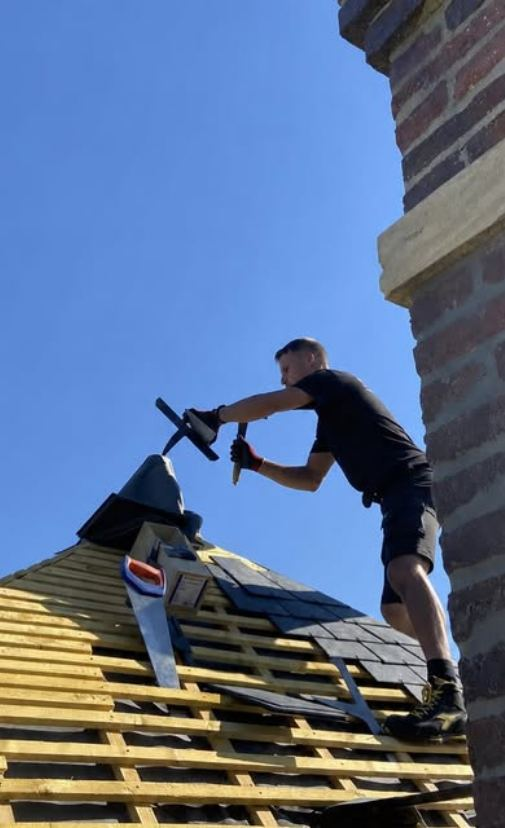
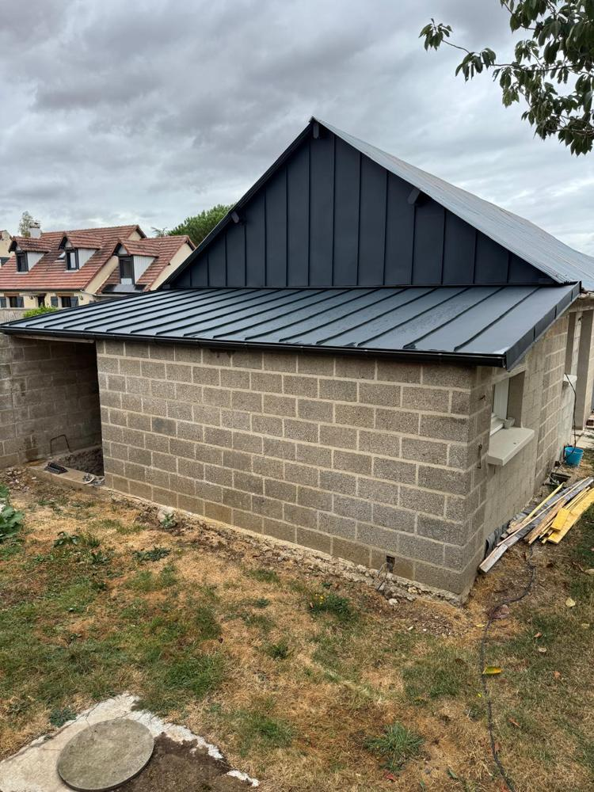
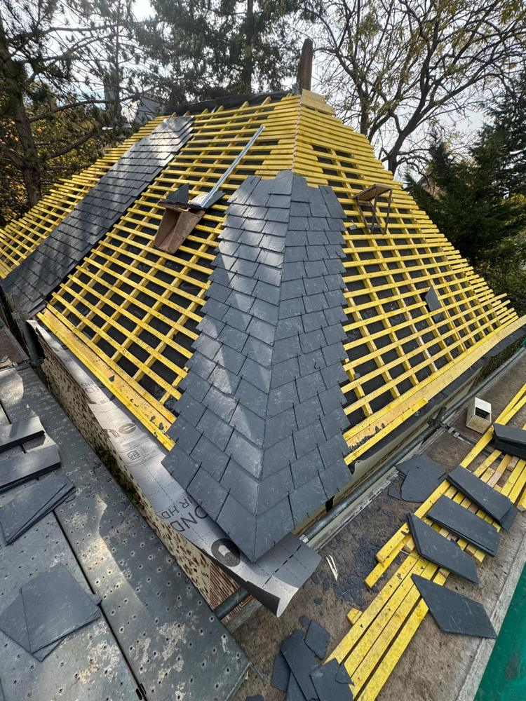
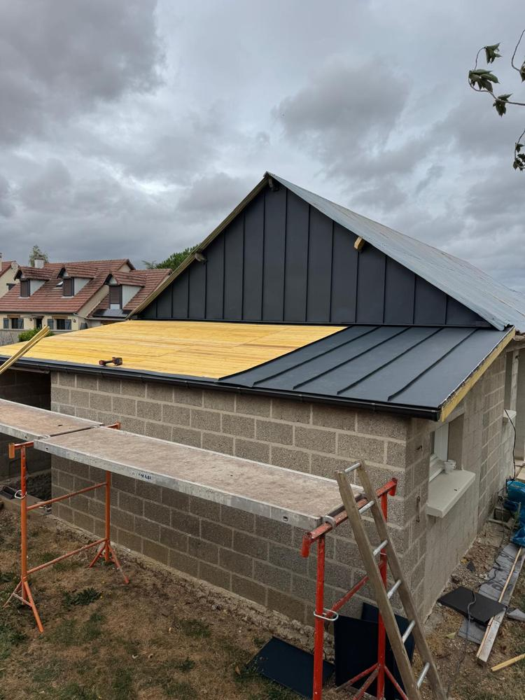
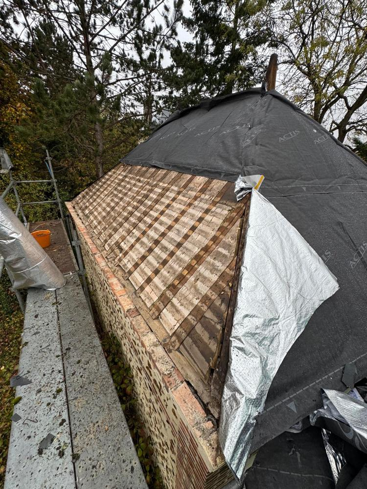

Couvreur zingueur · Portes (27)
Couverture et zinguerie dans l'Eure
Rénovation de toiture, réparation de fuites, gouttières et ornementation en zinc et cuivre, autour de Conches-en-Ouche, Évreux et Le Neubourg.
- Devis gratuit écrit et détaillé
- Un seul interlocuteur l'artisan, du devis à la fin du chantier
- Tous métaux zinc, cuivre, acier, aluminium
- Chantier nettoyé avant notre départ
Nos prestations
Couverture, fuites et zinguerie
Une seule entreprise pour la couverture et tout ce qui est en métal sur votre toit.

Rénovation de toiture
Réfection complète ou partielle en tuile, ardoise, zinc ou bac acier.
Voir la prestation
Réparation de fuite
Recherche de l'origine, puis réparation de la couverture ou de la zinguerie.
Voir la prestation
Gouttières et zinguerie
Gouttières, chéneaux, descentes et habillages en zinc, cuivre ou aluminium.
Voir la prestation- Tuile
- Ardoise
- Zinc
- Cuivre
- Bac acier
- Noues et faîtages
- Lucarnes
- Corniches
- Étanchéité
Votre artisan
Thomas, couvreur zingueur

Vous parlez à l'artisan qui monte sur votre toit, du premier appel à la fin du chantier.
Couverture
Tuile, ardoise, zinc et bac acier.
Ferblanterie
Zinc, cuivre, acier et aluminium façonnés.
Bâti ancien
Les matériaux d'origine respectés.
Particuliers et pros
Maisons, entreprises, collectivités.
Ornementation
La signature d'un ferblantier

Épis de faîtage, girouettes, crêtes, habillages de lucarnes : les finitions en zinc et en cuivre qui donnent du caractère à une toiture.
- Épis de faîtage
- Girouettes
- Crêtes
- Lucarnes
- Corniches
Nos réalisations
Sur nos chantiers
Bac acier, ardoise, couvertines et zinguerie : quelques travaux récents.






Comment ça se passe
Votre chantier en 3 étapes
- 1
Appel ou formulaire
Décrivez-nous votre toiture et ce qui vous inquiète.
- 2
Visite et devis gratuit
Nous venons voir et vous remettons un devis écrit et détaillé.
- 3
Travaux
Couverture et zinguerie réalisées, chantier nettoyé avant de partir.
Zone d'intervention
Couvreur autour de Conches-en-Ouche et Évreux
Depuis Portes, nous intervenons dans ces communes et leurs environs.
Pays de Conches et d'Ouche
- Portes
- Conches-en-Ouche
- La Bonneville-sur-Iton
- Breteuil
- Mesnils-sur-Iton
- Mesnil-en-Ouche
Évreux et alentours
- Évreux
- Saint-Sébastien-de-Morsent
- Arnières-sur-Iton
- Gravigny
- Guichainville
- Louviers
Le Neubourg et la Risle
- Le Neubourg
- Beaumont-le-Roger
- Serquigny
- Brionne
- Bernay
Questions fréquentes
Avant de nous appeler
Combien coûtent les travaux ?
Le prix dépend de la surface, du matériau, de l'accès et de l'état de la toiture. Nous venons voir et vous remettons un devis gratuit, écrit et détaillé.
Faut-il une autorisation de la mairie ?
Une réfection à l'identique n'en demande généralement pas. Un changement de matériau ou de couleur passe par une déclaration préalable, et les abords de monuments historiques par l'avis de l'architecte des Bâtiments de France.
Que faire après une tempête ?
Ne montez pas sur votre toit. Appelez-nous : nous vérifions la couverture, les faîtages et la zinguerie, puis nous remplaçons ce qui a été arraché ou déplacé.
Intervenez-vous sur les maisons anciennes ?
Oui. Ardoise, tuile plate, zinc et cuivre : nous travaillons sur le bâti ancien comme sur les maisons récentes, en respectant les matériaux d'origine.
Travaillez-vous pour les professionnels ?
Oui. Nous intervenons pour les particuliers comme pour les entreprises, les syndics et les collectivités.
Un projet de toiture ?
Décrivez-nous votre toiture : nous vous rappelons pour fixer une visite et établir un devis gratuit.